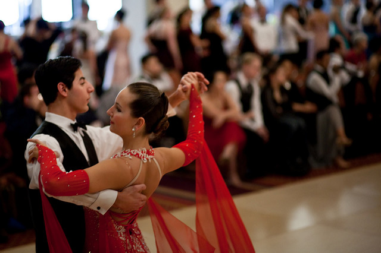

Contexte historique : deux danses, une même racine
Le tango argentin est né à la fin du XIXe siècle à Buenos Aires et Montevideo, mêlant les danses et musiques des esclaves noirs, des travailleurs saisonniers et des immigrants européens avec les traditions des gauchos. Il a évolué organiquement au fil du temps, atteignant son apogée en Argentine entre 1930 et 1950, avant d'arriver en Europe dans sa forme originale dans les années 1970.
Le tango de salon, quant à lui, descend directement du tango argentin mais a subi un raffinement européen profond. Dès le début du XXe siècle, cette version était dansée de manière moins sensuelle et plus stylisée, faisant face à une opposition initiale de l'Église et du monde médical. L'influence anglaise l'a standardisé en une forme compétitive, et il est devenu l'un des cinq styles officiels de la danse de salon internationale.
Même nom, même ancêtre — mais deux danses qui ont suivi des chemins radicalement différents.
Comprendre cette divergence historique est essentiel pour saisir pourquoi ces deux styles se ressemblent superficiellement tout en étant fondamentalement différents dans leur esprit, leur technique et leur pratique.
Différences techniques fondamentales : posture, étreinte et mouvement
Les différences techniques entre les deux styles sont immédiatement visibles pour un observateur attentif. Elles touchent à la posture du corps, à la façon dont les partenaires se tiennent, et à la qualité du mouvement. Dans le tango argentin, le follower enrichit la danse d'adornos — des embellissements personnels ajoutés dans les pauses et les silences musicaux. Dans le tango de salon, chaque mouvement suit un manuel standardisé.
| Critère | Tango Argentin | Tango de Salon |
|---|---|---|
| Posture | Forme en « ∧ inversé » — hauts du corps proches, hanches distantes | Formation en V — espace entre les partenaires, cadre rigide |
| Étreinte | Flexible et détendue, variations fermées ou ouvertes selon le moment | Cadre fixe maintenu en permanence, genoux fléchis |
| Mouvement | Jeu de jambes fluide, coulé et organique | Accents nets, saccadés et précis |
| Tempo | Variable — suit l'interprétation personnelle de la musique | Strictement 31 à 33 mesures par minute pour la compétition |
Dans le tango argentin, les danseurs peuvent ralentir, accélérer ou s'arrêter selon ce qu'ils ressentent dans la musique. Le corps reste détendu et sensible. Dans le tango de salon, les règles codifiées garantissent une uniformité de mouvement permettant un jugement objectif lors des compétitions.

Philosophie : improvisation versus structure codifiée
La différence la plus profonde entre les deux styles n'est pas technique — elle est philosophique. Le tango argentin et le tango de salon reposent sur des visions diamétralement opposées de ce qu'est la danse.
Le tango argentin met l'accent sur l'improvisation comme un dialogue non verbal entre le guideur et le suiveur. Les danseurs apprennent des éléments de base — le pas, l'ocho, la sacada — mais restent libres de prendre différentes directions, rythmes ou vitesses à tout moment. Aucune chorégraphie standardisée n'existe : chaque tanda est une conversation unique entre deux personnes.
Dans le tango argentin, chaque danse est une improvisation : une conversation intime que deux personnes créent ensemble, en temps réel.
Le tango de salon, en revanche, fonctionne avec des mouvements standardisés et des techniques détaillées dans des manuels officiels. Cette codification permet un jugement objectif et un classement compétitif. Les juges évaluent la technique, la précision et la conformité aux standards établis. C'est une forme d'art maîtrisée et reproductible.
Ni l'un ni l'autre n'est supérieur — ils répondent simplement à des désirs différents. L'un cherche la liberté créative, l'autre la maîtrise technique et la compétition.
Musique et contexte social : la milonga versus la compétition
Le contexte dans lequel chaque danse se pratique reflète également leurs différences fondamentales. Le tango argentin vit dans la milonga — un rassemblement social où des danseurs de tous niveaux partagent la piste dans une atmosphère de respect mutuel, de connexion et de plaisir. La musique jouée est essentiellement issue de l'âge d'or argentin : Pugliese, D'Arienzo, Di Sarli, Troilo.
Le tango de salon, lui, s'épanouit dans le contexte des compétitions et championnats. Les danseurs s'entraînent pour maîtriser des figures imposées, soignent leur présentation visuelle et leur timing précis. La musique est souvent plus contemporaine ou arrangée pour correspondre aux tempos réglementaires.
Dans une milonga de tango argentin, le cabeceo — un léger hochement de tête — suffit pour inviter quelqu'un à danser. Il n'y a pas de podium, pas de jury. Il y a simplement deux personnes, une piste, et la musique qui guide.
Une danse toujours en évolution, l'autre codifiée pour l'éternité
La distinction la plus révélatrice entre les deux styles tient à leur rapport au temps et au changement. Le tango argentin est une danse qui n'est pas encore arrivée à sa finalisation — elle continue d'évoluer, d'intégrer de nouvelles influences, de se réinventer à chaque génération de danseurs. Le tango nuevo d'Astor Piazzolla, le tango queer, les fusions contemporaines : tout cela fait partie de la vitalité du tango argentin.
Le tango de salon, au contraire, représente une forme d'art codifiée et stabilisée, conçue pour le jugement, les championnats et la reproduction fidèle d'un standard établi. Cette stabilité est sa force : elle permet une progression claire, des certifications internationales et une communauté compétitive mondiale.
Chez BE-TANGO, nous enseignons le tango argentin dans toute sa liberté et sa richesse expressive — la version qui garde l'âme du Río de la Plata et qui continue d'évoluer à Bruxelles comme à Buenos Aires.